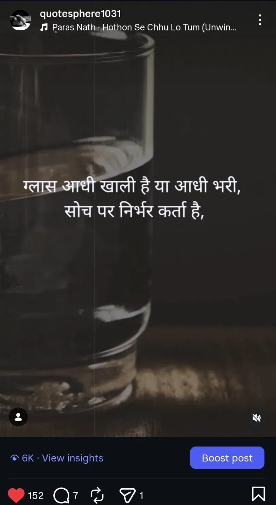
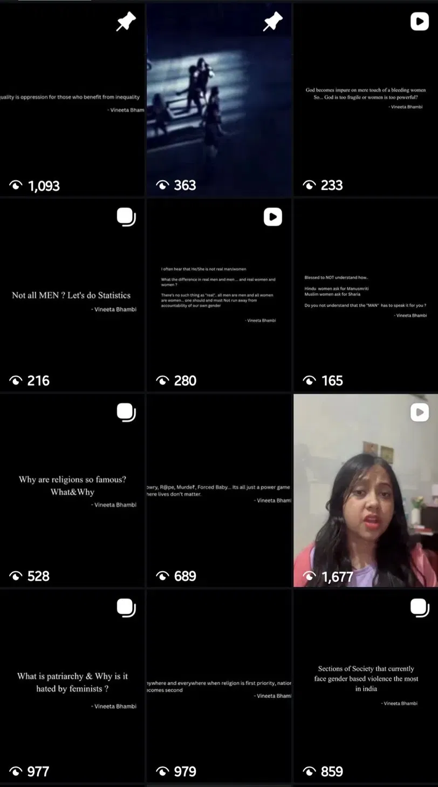

Content & Voice
Personal Accounts
Two accounts. Two voices. Both mine — showing range across emotional and analytical content.
Quotesphere1031 · Hindi Poetry & Quotes · Since 2022

Built and scaled from scratch. Top post: 6K+ views, 152 likes. Multiple reels crossing 4K–6K views. Original Hindi writing — literary devices, metaphor, emotional resonance. Consistent content voice that earned organic engagement from a cold audience.
Vishhh247 · Cultural & Social Commentary · Current

Black aesthetic. Analytical cultural commentary on patriarchy, caste, gender, religion, and social inequality. Original quotes, carousel posts, and collab reels with social workers. Every post is a considered point of view — not content for content's sake.